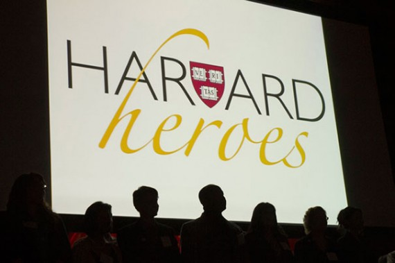

Featured Events
-
Through A Child’s Eye: Illustrations by Students from the Boston...
Sat., June 15, 2013, 11:00am - 6:00pm
-
International Month at the Arnold Arboretum
Sun., June 16, 2013, 2:00pm
-
FreeCycle at the Farmer's Market
Tue., June 18, 2013, 12:00pm - 2:00pm
-
Farmers' Market at Harvard
Tue., June 18, 2013, 12:00pm - 6:00pm
Harvard Channels
-
Campus & Community
Heroes, day by day
Sixty men and women from across Harvard were honored for their outstanding work and service to the University’s mission at the annual Harvard Heroes event. Read more…
From The Harvard Gazette
1 Hour Ago
-
Arts & Culture
“Earthquakes and war they have survived…”
Thomas Whittemore was an impressive person. The previous blog posts “The Leading Protagonist: Thomas Whittemore” and “Setting the Stage: Background on the Byzantine Institute” describe his grand project with the Byzantine Institute to restore, preserve, and document Byzantine monuments and how skilled he was in collecting Read more…
2 Hours Ago
-
Unparalleled Student Experience
iSURF week 1: Karibu Sana to Tanzania
Harvard President Drew Faust never disappoints when it comes to her commencement speeches. In addressing the class of 2013 with regards to the excitingly scary new chapter of their lives, President Faust sagaciously encouraged graduates to run towards adventure. Read more…
9 Hours Ago
-
Health & Medicine
New Video: Building Adult Capabilities to Improve Child Outcomes: A Theory of Change
This 5-minute video depicts a theory of change from the Frontiers of Innovation community for achieving breakthrough outcomes for vulnerable children and families. Read more…
13 Hours Ago
-
Unparalleled Student Experience
And Cut: My Summer Internship at CNN
Hi readers! My apologies for my delay in posting. Since school wrapped up, I was able to spend a little bit of time at home before coming to NYC to start my internship with Fareed Zakaria’s CNN Show Global Public Square. After this I’ll be headed to Sri Lanka to work on a social entrepreneurship [...] Read more…
15 Hours Ago